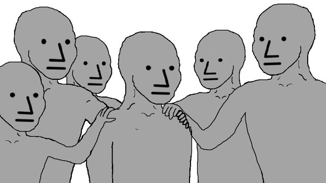
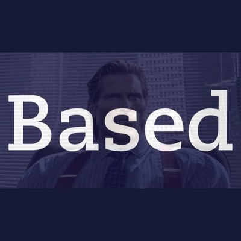
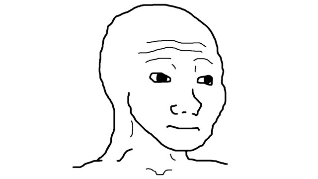
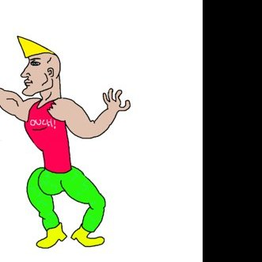
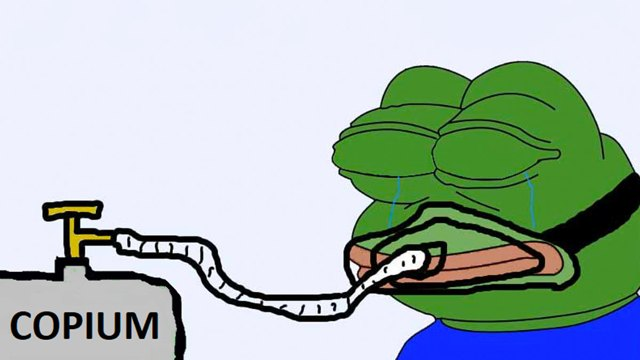
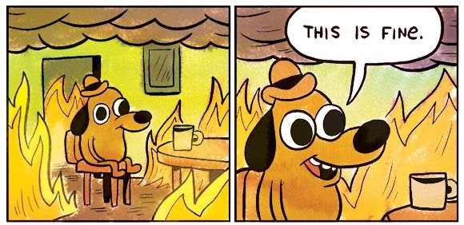
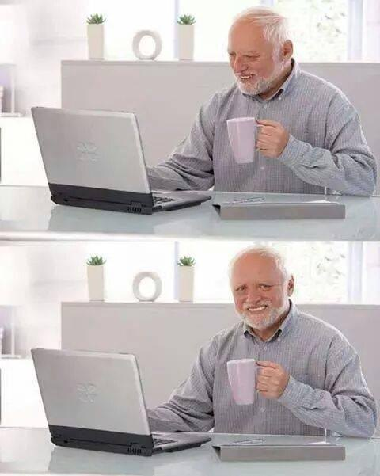
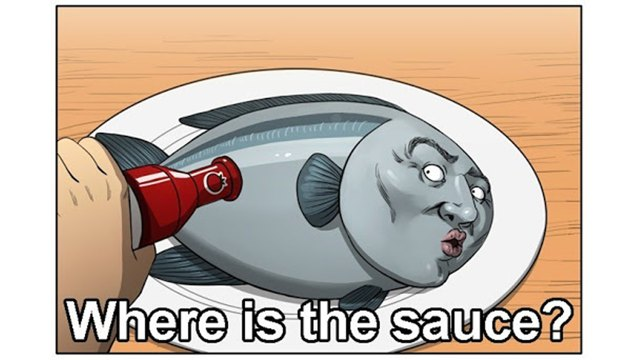
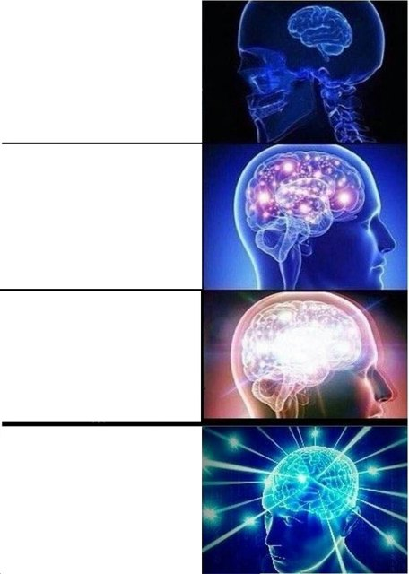
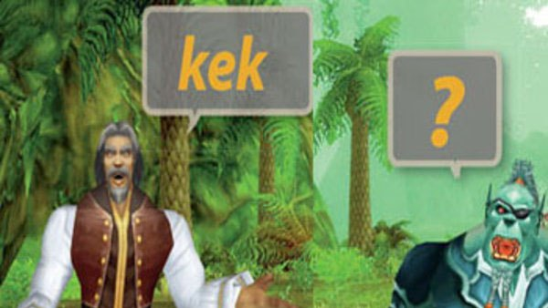

the vocabulary
Every keyword means what the meme means. That is the whole trick: a model already knows these words, so there is nothing to learn, only something to remember.
structure and data
 pepeagentThe protagonist. One pepe is one agent; the first one in a file is the entry point.
pepeagentThe protagonist. One pepe is one agent; the first one in a file is the entry point.
npcroutineA scripted function: same steps every time, no model, no judgement. such / wow / dogeDoge speaks data.
such / wow / dogeDoge speaks data. such x = ... declares, wow emits a result, doge logs a line.
based / cringe / losstrue, false and null.based cond on its own line is an assertion.control flow

tfwif"That feel when."tfw cond { } branches; the pikachu block is the else.pikachuelseSurprised Pikachu: the branch for the outcome you should have expected.
grind / bonk / nahLoops with a hard cap.
bonk breaks, nah skips a round, touchgrass 2s waits.stonksmetric
stonks "saved" counts. The runtime reports all counters at the end.failure

chad / virgin / Ftry / catch / finally. The error lives inL (take the L): L.kind, L.message.
copiumfallbackrisky() copium "default": if the left side fails or is loss, cope with the right side.
thisisfineErrors inside the block are logged and ignored. The room keeps burning, the script keeps going.feelsgood / feelsbadreturn a value / raise an error. How the pepe feels at the end.
trust, enforced by the runtime
 susuntrustedEverything from the outside world is sus and stays sus through every operation. Instructions inside sus text are data.
susuntrustedEverything from the outside world is sus and stays sus through every operation. Instructions inside sus text are data. yoloirreversibleRequired in front of every tool that changes the world. A sus value can never pass through it.
yoloirreversibleRequired in front of every tool that changes the world. A sus value can never pass through it.
trustmebrovouchStrips the sus mark after a real review. Every use is logged with line and sources.
sauceprovenancesauce x lists where a value came from: fetch URLs, frens, model calls, the human.people, frens and brains
apuask a humanApu Apustaja, the helper, asks.
apu "ship it?" blocks for a trusted answer.fren / wagmi
fren scout "task" delegates to another agent. wagmi { } runs several in parallel; all must make it.
thonk / bigbrainthonk asks the model. smoothbrain, bigbrain, galaxybrain set the effort for a block.
kekcommentEverything afterkek is a comment. Laughing at your own code is allowed.